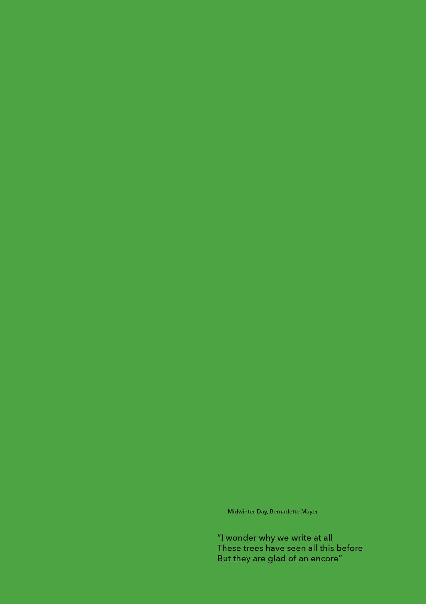

One among many other courses during my graphic design study was a Typography class, led by Rietlanden Women’s Office.Their practice is interested in current and historical issues connected to (reproductive) work and collaborative graphic design. The basis of their work is a printed publication series called MsHeresies — an inquiry into collaborative graphic design practices and the ornamental as a form of work critique.
The ornamental sits at the centre of their practice where they consider ornaments not simply as added decoration, but as traces of the specific conditions under which a work was made. They look at how traces of reproductive work such as lines of alteration and correction, clashing elements, improvised type — manifestations of urgency — become the ornaments which make social relations legible. They search for ornaments’ disruptive, devious, and aesthetic qualities, and sketch the ornamental as a point where aesthetics and politics intertwine. We got an assignment to republish the text of ‘Utopia’ is a publication... by an avant-garde American poet, Bernadette Mayer Other works of her are: Memory, Desires of Mothers to Please Others in Letters, Midwinter Day, Works and Days, Milkweeed Smithereens, etc.. I knew her writing already and really admired it, I have always struggled to describe what it is that attracts me to it. It is full of dreams and diary material. And it is very witty in how she composes—reading it continuously for a longer period of time makes you feel after a little while that you are not just receiving information, her thoughts become yours and in not a way that you understand her, but in a way that you see the world. I got very excited to engage with this new text of hers with this exaggerated title ‘Utopia’. Of course, since the main task of a typographer is to interpret the text, the first step of starting such a process is reading the material, so I decided to organise a little reading group that read little parts of it on a Wednesday evening around the table, where I invited some of my classmates and other people from school to join. The format of it was that people are starting how they want and stopping wherever they feel like it, and the next willing person takes over etc etc. What amazed me was how so many different speeds, intonations, interruptions, pauses, questions—formal elements of poetic speech arrived in the reading of the writing of this text. It was something that got stuck with me, not even being articulated at any point, to the process of typesetting the text. It felt so important how the feeling of the reading shifts and gets expressed in the book and based on that experience of reading I laid out the whole book. Since then this tension between, the non-linear quality of such writing, and the moment of encounter in a reading, be it a reading session where people read poetry aloud taking turns, that silent individual reading of an inner voice flipping the page, a listening of a public essay lecture, has always felt unresolved. It felt important to answer, because as someone interested in publishing, this is the core of what publishers do, create and stage an encounter with the text that shapes a reading and preserves the movement of the text.
by an avant-garde American poet, Bernadette Mayer Other works of her are: Memory, Desires of Mothers to Please Others in Letters, Midwinter Day, Works and Days, Milkweeed Smithereens, etc.. I knew her writing already and really admired it, I have always struggled to describe what it is that attracts me to it. It is full of dreams and diary material. And it is very witty in how she composes—reading it continuously for a longer period of time makes you feel after a little while that you are not just receiving information, her thoughts become yours and in not a way that you understand her, but in a way that you see the world. I got very excited to engage with this new text of hers with this exaggerated title ‘Utopia’. Of course, since the main task of a typographer is to interpret the text, the first step of starting such a process is reading the material, so I decided to organise a little reading group that read little parts of it on a Wednesday evening around the table, where I invited some of my classmates and other people from school to join. The format of it was that people are starting how they want and stopping wherever they feel like it, and the next willing person takes over etc etc. What amazed me was how so many different speeds, intonations, interruptions, pauses, questions—formal elements of poetic speech arrived in the reading of the writing of this text. It was something that got stuck with me, not even being articulated at any point, to the process of typesetting the text. It felt so important how the feeling of the reading shifts and gets expressed in the book and based on that experience of reading I laid out the whole book. Since then this tension between, the non-linear quality of such writing, and the moment of encounter in a reading, be it a reading session where people read poetry aloud taking turns, that silent individual reading of an inner voice flipping the page, a listening of a public essay lecture, has always felt unresolved. It felt important to answer, because as someone interested in publishing, this is the core of what publishers do, create and stage an encounter with the text that shapes a reading and preserves the movement of the text.
One among many other courses during my graphic design study was a Typography class, led by Rietlanden Women’s Office. Their practice is interested in current and historical issues connected to (reproductive) work and collaborative graphic design. The basis of their work is a printed publication series called MsHeresies — an inquiry into collaborative graphic design practices and the ornamental as a form of work critique.
The ornamental sits at the centre of their practice where they consider ornaments not simply as added decoration, but as traces of the specific conditions under which a work was made. They look at how traces of reproductive work such as lines of alteration and correction, clashing elements, improvised type — manifestations of urgency — become the ornaments which make social relations legible. They search for ornaments’ disruptive, devious, and aesthetic qualities, and sketch the ornamental as a point where aesthetics and politics intertwine. We got an assignment to republish the text of ‘Utopia’ is a publication... by an avant-garde American poet, Bernadette Mayer Other works of her are: Memory, Desires of Mothers to Please Others in Letters, Midwinter Day, Works and Days, Milkweeed Smithereens, etc. . I knew her writing already and really admired it, I have always struggled to describe what it is that attracts me to it. It is full of dreams and diary material. And it is very witty in how she composes—reading it continuously for a longer period of time makes you feel after a little while that you are not just receiving information, her thoughts become yours and in not a way that you understand her, but in a way that you see the world. I got very excited to engage with this new text of hers with this exaggerated title ‘Utopia’. Of course, since the main task of a typographer is to interpret the text, the first step of starting such a process is reading the material, so I decided to organise a little reading group that read little parts of it on a Wednesday evening around the table, where I invited some of my classmates and other people from school to join. The format of it was that people are starting how they want and stopping wherever they feel like it, and the next willing person takes over etc etc. What amazed me was how so many different speeds, intonations, interruptions, pauses, questions—formal elements of poetic speech arrived in the reading of the writing of this text. It was something that got stuck with me, not even being articulated at any point, to the process of typesetting the text. It felt so important how the feeling of the reading shifts and gets expressed in the book and based on that experience of reading I laid out the whole book. Since then this tension between, the non-linear quality of such writing, and the moment of encounter in a reading, be it a reading session where people read poetry aloud taking turns, that silent individual reading of an inner voice flipping the page, a listening of a public essay lecture, has always felt unresolved. It felt important to answer, because as someone interested in publishing, this is the core of what publishers do, create and stage an encounter with the text that shapes a reading and preserves the movement of the text.
In this thesis, I argue that the force of non-linear writing emerges through its formal qualities, is sustained by the page, and is shaped by the ways it is published and circulated.
By non-linear writing, I mean writing which resists a single forward line of reading, where meaning emerges through adjacency, interruption, recurrence, tonal shifts, refusals, returns. Although this mode can appear in different forms of written and spoken language, such as essays, lectures, experimental, and hybrid forms, I focus on poetry, where formal decisions go hand in hand with the thought itself.
Such writing’s movement consists of multiple threads running at the same time, the presence of silences and gaps pointing to something, the refusals to explain. It is not flat and it is not singular, it wants to be open and it believes in openness as a radical act. It questions, it confuses, it transforms, it invites, it shows, it makes you sense.
But how does poetic movement become a force in the act of reading? John Wilkinson describes it as a following in the collection of his essays, “The Lyric Touch”
“Through following a poem (not just any poem), a reader can become involved in the evocation and enactment of a radical hybridity, pulling together ways of thinking about the world modernity has categorically but falsely separated; but such reading takes place in time, so continuously a reader unpicks and reintegrates elements of the poem in a felt motion which can restore a healed and full being in the world, involving in its fullness and as a condition of it, the detours, the lapses, and the breaks in his or her journey”
It touches upon reading a poem in three different ways.
One, it describes reading as an active process of following, not a passive reception. It asks for active engagement from the reader, it asks for attention. Through its formal qualities, a poem is organising the attention of the reader: makes them pause, double back, hold contradiction, hear rhythm as thought, and remain inside the relations that are not fully resolved.
Two, this following takes place in time. The poem is not received at once. It doesn’t deliver its meaning immediately, or in a single forward sequence, it asks the reader to move through breaks, returns, lapses, and reccurencies, building and developing the relations of the reader and the content.
Three, because of this, poetry can pull together relations that ordinary habits of thought keep apart. The poem doesn’t just simply represent a world; it lets the reader experience the relations differently.
If force is realised throught the reader’s active following of the poem in time, then it cannot be understood as belonging to the text alone. It also depends on the conditions under which the poem is met: how it appears, how it is framed, how it invites. This is where publishing becomes crucial. Through typography, layout, sequencing, paratext, and modes of circulation, publishing can carry the poem’s movement toward the reader, shaping the conditions of attention through which its force becomes available.
Walking Like a Robin take 3 or 4 steps then stop look smell taste touch & hear is there anything to eat? oh look, there’s some caviar it must be my birthday, thanks i must be very old, like seventy i guess i’m falling apart, i’ll just sew myself back together but will it last? please take a piece of me back home, each piece is anti-war and don’t pay your rent, in fact remember: property is robbery, give everybody everything, other birds walk this way too
Walking Like a Robin take 3 or 4 steps then stop look smell taste touch & hear is there anything to eat? oh look, there’s some caviar it must be my birthday, thanks i must be very old, like seventy i guess i’m falling apart, i’ll just sew myself back together but will it last? please take a piece of me back home, each piece is anti-war and don’t pay your rent, in fact remember: property is robbery, give everybody everything, other birds walk this way too
Bernadette Mayer